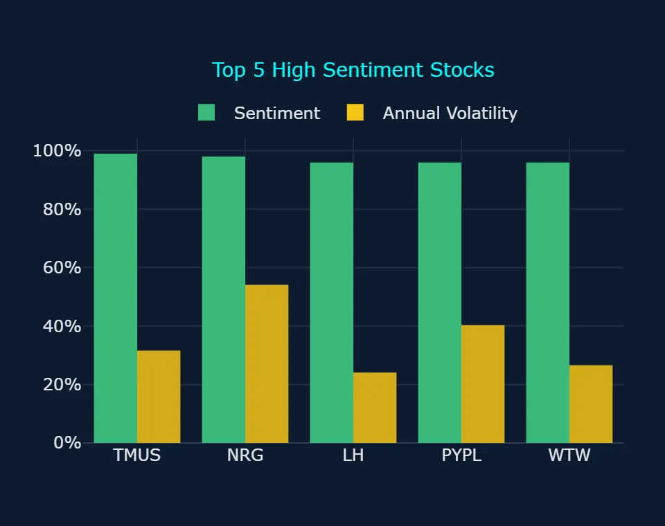
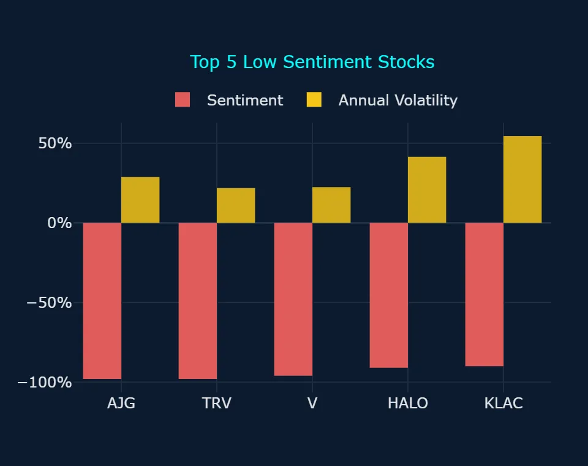
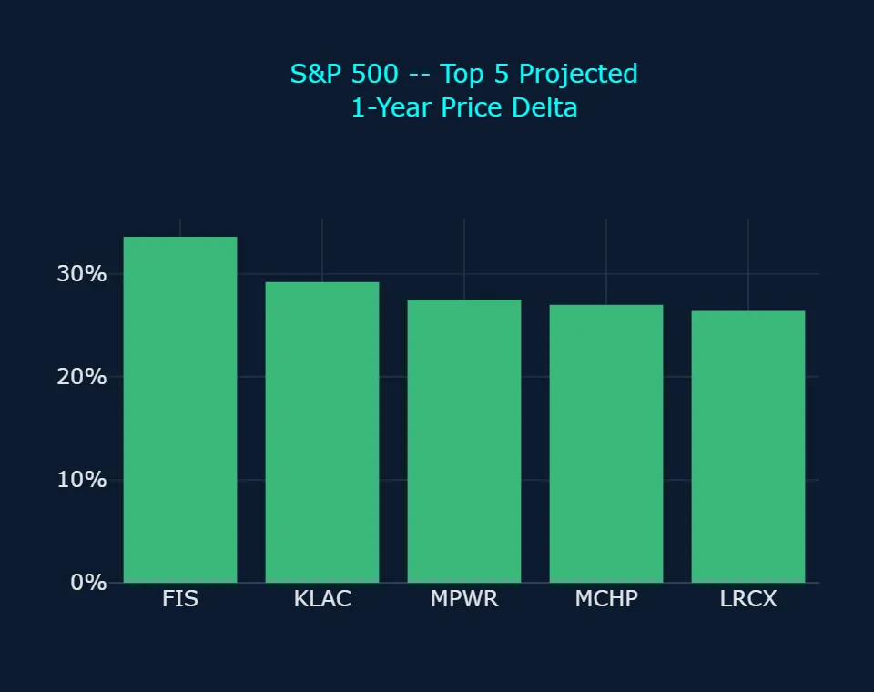
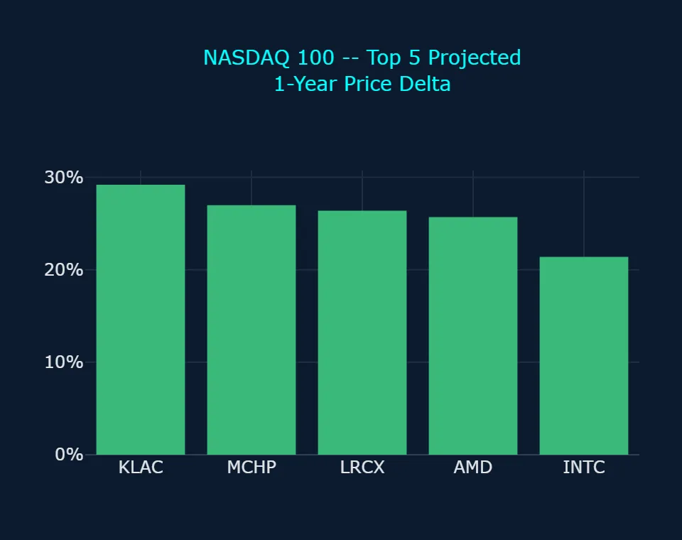
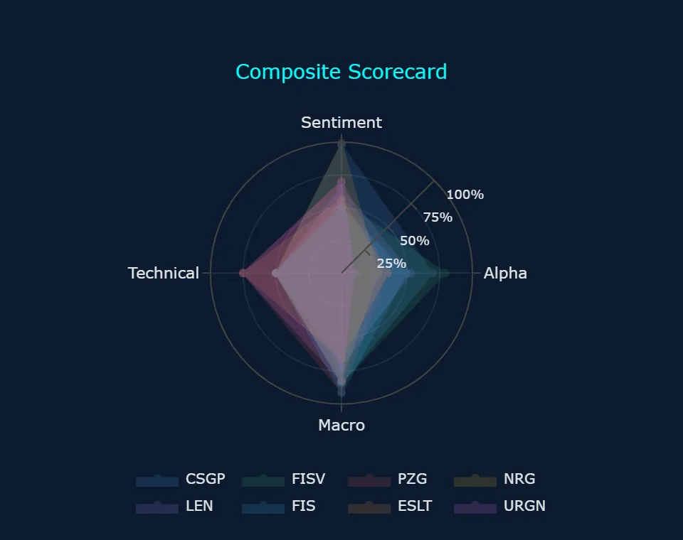
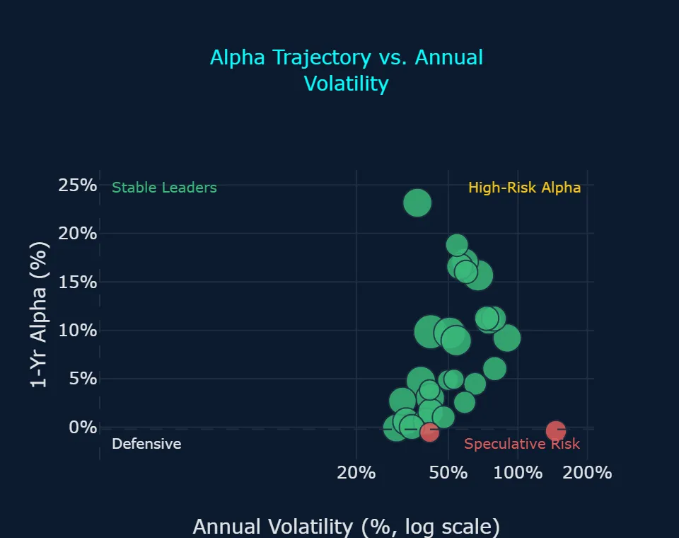
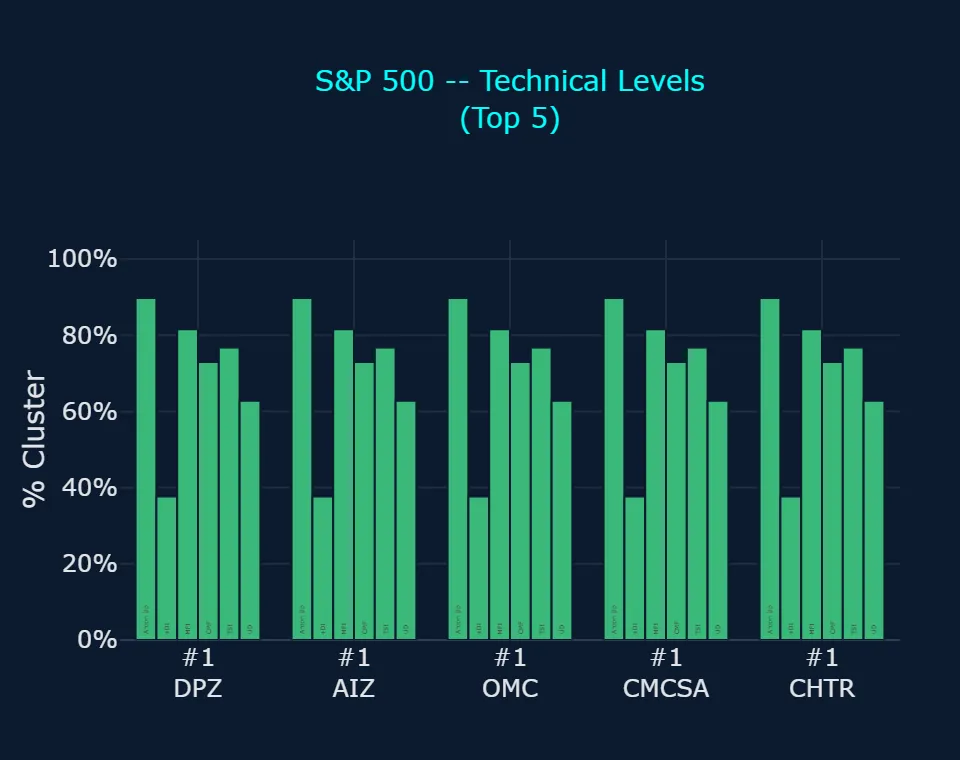
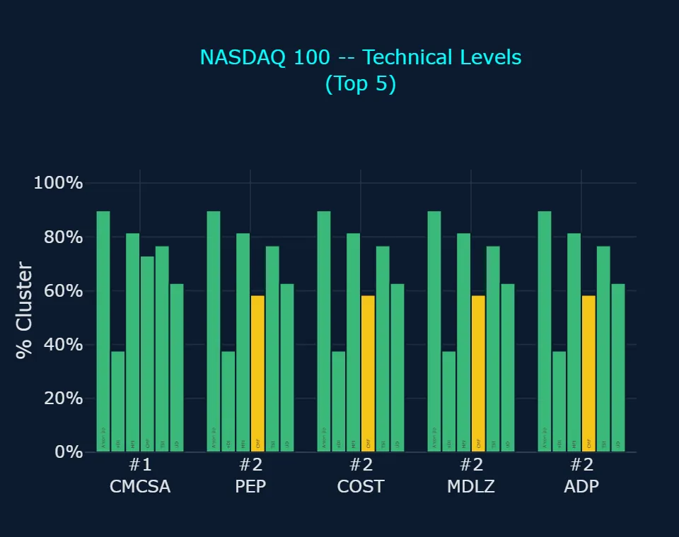
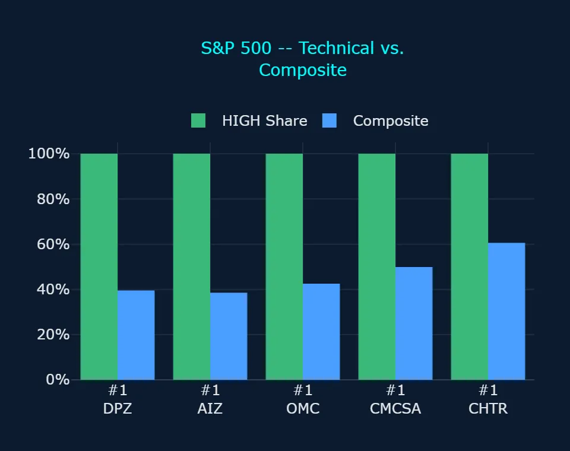
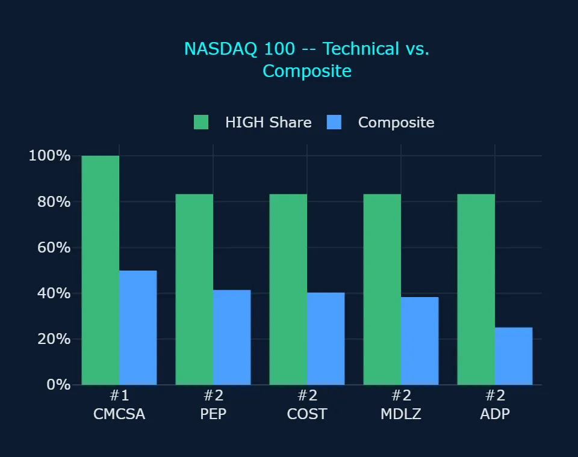

Zoonova AI: Pre-Market Quantitative Briefing – November 18, 2026
Session Quantitative Briefing: The Zoonova AI Intelligence Engine executes a hybrid architecture combining a proprietary Quad-Ensemble machine learning framework with Google Gemini Flash for real-time contextual synthesis and semantic macroeconomic grounding. The quantitative pipeline integrates four specialized estimators: Random Forest Regressor (RFR) for baseline structural stability, eXtreme Gradient Boosting (XGB) optimized for residual loss minimization, Categorical Boosting (CAT) for high-cardinality categorical signal processing, and Temporal Fusion Transformer (TFT) for multi-horizon price and volatility forecasting.
Zoonova AI: Pre-Market Momentum & Liquidity Report
1. QUANTITATIVE MODEL OVERVIEW & SIGNAL METRICS
Zoonova's predictive framework combines a Quad-Ensemble machine learning architecture comprising Random Forest Regressor [RFR], eXtreme Gradient Boosting [XGB], Categorical Boosting [CAT], and Temporal Fusion Transformer [TFT] for multi-horizon price trajectory forecasting and alpha probability calculation. Sentiment scoring is generated using VADER natural language processing to quantify news and market commentary tone. Macro breadth modeling and behavioral regime shift detection are driven by BIRCH clustering to isolate structural outliers and cross-asset anomalies.
- SPDR S&P 500 ETF Trust (SPY) settled at $732.44 on 2026-11-17 with negative sentiment of -44.0% and annualized volatility of 16.93%, while multi-horizon projections indicate an initial near-term dip to $727.00 before climbing to a 1-year price target of $808.64, representing an implied gain of +10.4% (Zoonova, 2026-11-17).
- Invesco QQQ Trust Series 1 (QQQ) closed at $656.95 on 2026-11-17 under negative sentiment of -44.0% and annualized volatility of 22.68%, with predictive arrays forecasting a temporary pullback toward $651.80 followed by an advance to $716.07 over the 1-year horizon, reflecting an implied change of +9.0% (Zoonova, 2026-11-17).
- SPDR Dow Jones Industrial Average ETF (DIA) finished at $507.31 on 2026-11-17 with deeply depressed sentiment of -68.0% and annualized volatility of 15.26%, alongside an estimated 1-year price target of $540.03 that implies a +6.5% trajectory despite short-term weakness toward $502.20 (Zoonova, 2026-11-17).
- Vanguard Total Bond Market ETF (BND) closed at $70.71 on 2026-11-17 with positive sentiment of +23.0% and annualized volatility of 4.42%, projected to reach $76.64 over 1 year for an implied gain of +8.4% (Zoonova, 2026-11-17).
- SPDR Gold Shares ETF (GLD) ended at $352.48 on 2026-11-17 carrying a strong positive sentiment of +84.0% and annualized volatility of 24.77%, with price modeling projecting an advance to $375.00 over the 1-year timeframe, representing an implied gain of +6.4% (Zoonova, 2026-11-17).
2. SENTIMENT INSIGHTS – TOP 5 HIGH & LOW
Top 5 High Sentiment Stocks
| Ticker | Company Name | Sentiment Score | Primary Catalyst / Driver |
|---|---|---|---|
| TMUS | T-Mobile US Inc | +99.0% | Citigroup raised its price target following strong third-quarter postpaid net account additions of 274,000 and an upgraded full-year free cash flow guidance range of $18.7 billion to $18.8 billion (MarketBeat, 2026-11-17). |
| NRG | NRG Energy Inc. | +98.0% | NRG reached an agreement to sell six natural gas power generation facilities totaling 4.9 GW to LS Power for $4 billion in cash to fund debt reduction and share repurchases (Utility Dive, 2026-11-16). |
| LH | Labcorp Holdings Inc. | +96.0% | Labcorp expanded its international clinical trial infrastructure into Latin America through a strategic partnership with Grupo Fleury in Brazil (PR Newswire, 2026-11-17). |
| PYPL | PayPal Holdings Inc | +96.0% | PayPal advanced its financial platform strategy by integrating earned wage access with Workday and progressing its industrial bank charter application to expand merchant credit (Payments Dive, 2026-11-13). |
| WTW | Willis Towers Watson Public Limited Co | +96.0% | Willis Towers Watson enhanced its enterprise analytics offerings by appointing a global head of risk engineering and deploying upgraded AI-driven climate diagnostic platforms (WTW, 2026-11-12). |
Top 5 Low Sentiment Stocks
| Ticker | Company Name | Sentiment Score | Primary Friction / Risk Factor |
|---|---|---|---|
| AJG | Arthur J. Gallagher & Co. | -98.0% | Investor sentiment was dampened after third-quarter revenue of $3.92 billion missed Wall Street consensus projections despite earnings per share narrowly beating expectations (MarketBeat, 2026-11-17). |
| TRV | Travelers Companies Inc. | -98.0% | Market sentiment remained depressed due to concerns surrounding commercial pricing moderation, catastrophe loss exposure, and lower personal policy retention (24/7 Wall St, 2026-11-17). |
| V | Visa Inc | -96.0% | Sentiment faced headwinds as card spending volume growth moderated alongside newly released company research detailing a significant rise in AI-driven commercial cyber fraud (Stock Titan, 2026-11-17). |
| HALO | Halozyme Therapeutics Inc. | -91.0% | Shares faced negative sentiment following an executive insider sale of $6.0 million by the chief executive officer and a Morgan Stanley rating downgrade to Equalweight based on long-term royalty duration limits (Investing.com UK, 2026-11-17). |
| KLAC | KLA Corp. | -90.0% | Sentiment deteriorated due to valuation compression as its forward price-to-sales multiple exceeded 9.3x amid semiconductor equipment sector volatility ahead of bellwether earnings reports (TradingView, 2026-11-17). |
3. ALPHA PROBABILITY & PRICE DELTA LEADERBOARD – 1-YEAR HORIZON
S&P 500 – Top 5 High Alpha Probability (1yr)
| Ticker | Current Price ($) | 1-Yr Target Price ($) | Alpha Probability (%) | Implied Excess Alpha (%) | 10%+ Alpha? |
|---|---|---|---|---|---|
| FISV | $62.31 | $74.86 | 66.31% | 9.73% | Split |
| CSGP | $30.59 | $36.78 | 58.30% | 9.85% | Split |
| CPRT | $31.45 | $34.69 | 53.79% | -0.08% | Split |
| BSX | $43.03 | $47.76 | 47.86% | 0.59% | Both No |
| LEN | $82.34 | $94.84 | 44.25% | 4.78% | Both No |
S&P 500 – Top 5 Price Delta + % Change (1yr)
| Ticker | Current Price ($) | 1-Yr Target Price ($) | Absolute Delta ($) | Projected 1-Yr % Change (%) | Implied Excess Alpha (%) |
|---|---|---|---|---|---|
| FIS | $27.47 | $36.69 | $9.22 | 33.56% | 23.16% |
| KLAC | $144.56 | $186.82 | $42.26 | 29.23% | 18.83% |
| MPWR | $1,317.37 | $1,679.48 | $362.11 | 27.49% | 17.09% |
| MCHP | $59.43 | $75.47 | $16.04 | 26.99% | 16.58% |
| LRCX | $210.69 | $266.38 | $55.69 | 26.43% | 16.02% |
NASDAQ 100 – Top 5 High Alpha Probability (1yr)
| Ticker | Current Price ($) | 1-Yr Target Price ($) | Alpha Probability (%) | Implied Excess Alpha (%) | 10%+ Alpha? |
|---|---|---|---|---|---|
| CPRT | $31.45 | $34.69 | 53.79% | -0.08% | Split |
| DXCM | $82.04 | $91.89 | 27.73% | 1.60% | Both No |
| NFLX | $59.68 | $65.89 | 24.63% | 0.01% | Both No |
| MRNA | $206.80 | $227.49 | 20.49% | -0.39% | Both No |
| MRVL | $148.74 | $173.22 | 19.44% | 6.05% | Both No |
NASDAQ 100 – Top 5 Price Delta + % Change (1yr)
| Ticker | Current Price ($) | 1-Yr Target Price ($) | Absolute Delta ($) | Projected 1-Yr % Change (%) | Implied Excess Alpha (%) |
|---|---|---|---|---|---|
| KLAC | $144.56 | $186.82 | $42.26 | 29.23% | 18.83% |
| MCHP | $59.43 | $75.47 | $16.04 | 26.99% | 16.58% |
| LRCX | $210.69 | $266.38 | $55.69 | 26.43% | 16.02% |
| AMD | $503.41 | $633.00 | $129.59 | 25.74% | 15.34% |
| INTC | $55.17 | $66.97 | $11.80 | 21.39% | 10.98% |
4. REAL-TIME CONTEXTUAL ENRICHMENT
Broad equity benchmarks faced defensive positioning heading into the 2026-11-18 session following notable volatility across major indexes on 2026-11-17, where the S&P 500 declined 1.0% and the Dow Jones Industrial Average dropped 1.6% (Barchart.com, 2026-11-17). Macro crosscurrents intensified as Federal Reserve officials signaled caution regarding premature interest rate cuts, while international trade dynamics remained in focus during the opening of the APEC summit in Shenzhen (ClickOnDetroit, 2026-11-18). In high-sentiment equities, capital rotated into companies demonstrating defensive cash generation and strategic portfolio execution; NRG Energy Inc. surged in investor favor following its $4 billion gas generation asset divestiture to LS Power (Utility Dive, 2026-11-16), and T-Mobile US Inc pushed sentiment to +99.0% as higher service margins bolstered multi-year cash flow visibility (Trefis, 2026-11-18). These defensive flows correspond with Zoonova ML sentiment readings, which reflect elevated optimism for isolated idiosyncratic balance sheet compounders while broad market proxies such as SPY and QQQ carry negative sentiment of -44.0% (Zoonova, 2026-11-17).
In the technology and semiconductor sectors, volatility centered on NVIDIA Corp following its fiscal third-quarter 2027 financial release after the close on 2026-11-17, reporting revenue of $115.8 billion and issuing fourth-quarter revenue guidance of $130.0 billion under interim chief executive officer Colette Kress (Stock Market News, 2026-11-17). Despite topping consensus forecasts, shares saw whipsaw post-earnings trading, keeping technology sentiment subdued and confirming Zoonova's Tech Stock Scorecard Composite for NVDA at 43.2, where neither model expects 10%+ benchmark outperformance. Meanwhile, top alpha probability candidates show constructive operational backing: Fiserv, Inc. (FISV) demonstrates a 1-year alpha probability of 66.31% alongside an estimated 1-year price of $74.86, though the two models split on clearing the 10%+ outperformance threshold (Zoonova, 2026-11-17). Similarly, CoStar Group, Inc. (CSGP) exhibits an alpha probability of 58.30% with projected 1-year price appreciation to $36.78 against its previous close of $30.59, where the two models split (Zoonova, 2026-11-17). Breadth indicators confirm prevailing risk aversion, with BIRCH clustering flagging 1 stock with moderate severity bearish anomalies and 19 stocks with low severity bearish anomalies across vulnerable software and healthcare names, while only 4 stocks registered low severity bullish anomalies.
5. ANOMALY DETECTION SCANNER
Direction: Bearish
Moderate Severity (1 stock)
- OMER – Omeros Corporation: Bearish Short-Term (3d) Trend Anomaly, Bearish Long-Term (1w) Trend Anomaly
Low Severity (19 stocks)
- CRM – Salesforce Inc: Bearish Short-Term (3d) Trend Anomaly
- HOOD – Robinhood Markets Inc: Bearish Long-Term (1w) Trend Anomaly
- IBM – International Business Machines Corp.: Bearish Short-Term (3d) Trend Anomaly
- ICE – Intercontinental Exchange Inc: Bearish Short-Term (3d) Trend Anomaly
- IDYA – Ideaya Biosciences Inc: Bearish Short-Term (3d) Trend Anomaly
- KOD – Kodiak Sciences Inc: Bearish Short-Term (3d) Trend Anomaly
- LGND – Ligand Pharmaceuticals, Inc.: Bearish Long-Term (1w) Trend Anomaly
- MCO – Moody`s Corp.: Bearish Short-Term (3d) Trend Anomaly
- MRNA – Moderna Inc: Bearish Long-Term (1w) Trend Anomaly
- NTRA – Natera Inc: Bearish Long-Term (1w) Trend Anomaly
- OVID – Ovid Therapeutics Inc: Bearish Long-Term (1w) Trend Anomaly
- PBYI – Puma Biotechnology Inc: Bearish Long-Term (1w) Trend Anomaly
- PTGX – Protagonist Therapeutics Inc: Bearish Long-Term (1w) Trend Anomaly
- ROST – Ross Stores, Inc.: Bearish Long-Term (1w) Trend Anomaly
- RVMD – Revolution Medicines Inc: Bearish Long-Term (1w) Trend Anomaly
- TPR – Tapestry Inc: Bearish Short-Term (3d) Trend Anomaly
- TTWO – Take-Two Interactive Software, Inc.: Bearish Long-Term (1w) Trend Anomaly
- VIR – Vir Biotechnology Inc: Bearish Long-Term (1w) Trend Anomaly
- ZYME – Zymeworks BC Inc: Bearish Long-Term (1w) Trend Anomaly
Direction: Bullish
Low Severity (4 stocks)
- ESLT – Elbit Systems Ltd.: Bullish Short-Term (3d) Trend Anomaly
- PZG – Paramount Gold Nevada Corp: Bullish Short-Term (3d) Trend Anomaly
- RYTM – Rhythm Pharmaceuticals Inc.: Bullish Short-Term (3d) Trend Anomaly
- URGN – UroGen Pharma Ltd: Bullish Long-Term (1w) Trend Anomaly
6. STRATEGIC INVESTMENT ASSESSMENT
- Prioritize top-ranked candidates on the Main Scorecard with balanced multi-factor alignment, led by CoStar Group, Inc. (CSGP), which holds the highest Composite on the Main Scorecard at 74.5, supported by a Sentiment Rating of 97.5, Macro Alignment of 84.1, and Alpha Rating of 69.5, though the two models split on 10%+ excess return potential (Zoonova, 2026-11-17).
- Incorporate select exposure to high-conviction alpha probability leaders such as Fiserv, Inc. (FISV), which delivers the highest Alpha Rating on the Main Scorecard at 79.0, a Macro Alignment of 83.6, and a 66.31% probability of achieving 1-year alpha above 10%, even as the two models split on the hurdle (Zoonova, 2026-11-17).
- Maintain conservative allocations in large-cap technology as captured on the Tech Stock Scorecard, where Intel Corp. (INTC) holds the highest Composite on the Tech Stock Scorecard at 49.4 with a Macro Alignment of 86.6, while NVIDIA Corp (NVDA) reflects an Alpha Rating of 10.1 and Composite of 43.2, with both models agreeing that neither expects 10%+ benchmark outperformance (‘Both No’) (Zoonova, 2026-11-17).
- Exercise defensive risk management across growth equities, as BIRCH anomaly tracking identified 1 stock with moderate severity bearish anomalies (Omeros Corporation) and 19 stocks with low severity bearish anomalies (including Salesforce Inc and Moderna Inc), compared to just 4 stocks with low severity bullish anomalies, warranting capital preservation and strict stop-loss discipline.
7. STOCK SCORECARD
Main Scorecard
| Ticker | Composite (%) | Alpha Rating | 10%+ Alpha? | Projected 1-Yr Change (%) | Street Consensus (Upside) | Next Earnings | Sentiment Rating | Technical Signal | Macro Alignment | Anomaly Flag | Catalyst / Risk | Market Cap | EPS Revisions (30d) | Short Interest / DTC | Options Flow | Earnings Surprise (4Q) | Bias |
|---|---|---|---|---|---|---|---|---|---|---|---|---|---|---|---|---|---|
| CSGP | 74.5% | 69.5 | Split | +20.2% | Buy (+18.8%) | 2027-02-23 | 97.5 | 50.0 | 84.1 | None | Commercial Real Estate Recovery | $12.6B | Downward (-2.4%) | 3.8% / 4.1 DTC | Neutral / Mixed | 3/4 Beats | Bullish |
| FISV | 66.7% | 79.0 | Split | +20.1% | Hold (+1.5%) | 2027-02-09 | 55.0 | 50.0 | 83.6 | None | Cost Reduction Restructuring | $33.7B | Downward (-3.2%) | 2.1% / 2.6 DTC | Bearish (Put Heavy) | 3/4 Beats | Bullish |
| PZG | 64.8% | 34.8 | Split | +26.0% | Buy (+150.0%) | 2027-02-11 | 70.0 | 75.0 | 90.6 | Bullish (3d) | Grassy Mountain Permitting | $78.8M | N/A (Pre-Revenue) | 0.7% / 2.0 DTC | Bullish (Call Skew) | N/A (No Coverage) | Neutral |
| NRG | 62.0% | 27.7 | Both No | +19.3% | Strong Buy (+72.5%) | 2027-02-23 | 99.0 | 50.0 | 82.0 | None | Data Center Power Demand | $19.7B | Upward (+8.4%) | 4.2% / 3.1 DTC | Bullish (Call Skew) | 3/4 Beats | Neutral |
| LEN | 58.8% | 52.7 | Both No | +15.2% | Hold (-6.2%) | 2026-12-15 (in 27d) | 65.0 | 50.0 | 71.1 | None | Housing Margin Pressure | $19.6B | Downward (-5.7%) | 8.8% / 6.9 DTC | Neutral / Mixed | 2/4 Beats | Neutral |
| FIS | 58.1% | 49.3 | Split | +33.6% | Hold (+28.0%) | 2027-02-22 | 50.0 | 50.0 | 91.7 | None | Banking Software Modernization | $14.6B | Downward (-4.1%) | 2.9% / 2.4 DTC | Bearish (Put Heavy) | 2/4 Beats | Neutral |
| ESLT | 56.4% | 35.0 | Both No | +13.4% | Hold (+2.1%) | 2027-03-24 | 56.5 | 75.0 | 65.0 | Bullish (3d) | European Defense Order Surge | $31.9B | Upward (+3.8%) | 0.9% / 1.8 DTC | Bullish (Call Skew) | 4/4 Beats (+6.1% avg) | Neutral |
| URGN | 55.4% | 9.2 | Both No | +19.6% | Strong Buy (+100.9%) | 2027-03-09 | 69.5 | 75.0 | 82.8 | Bullish (1w) | Zusduri Commercial Expansion | $1.2B | Upward (+12.5%) | 12.0% / 4.9 DTC | Bullish (Call Skew) | 3/4 Beats | Neutral |
| CPRT | 54.0% | 64.1 | Split | +10.3% | Buy (+20.5%) | 2026-12-01 (in 13d) | 50.0 | 50.0 | 49.0 | None | International Auction Growth | $29.5B | Neutral/Flat (0.0%) | 2.4% / 3.8 DTC | Neutral / Mixed | 3/4 Beats | Neutral |
| TMUS | 53.7% | 11.8 | Both No | +13.1% | Buy (+40.6%) | 2027-01-28 | 99.5 | 50.0 | 64.0 | None | Broadband Subscriber Momentum | $180.1B | Upward (+4.2%) | 1.6% / 2.5 DTC | Bullish (Call Skew) | 4/4 Beats (+4.8% avg) | Neutral |
| BSX | 51.0% | 57.0 | Both No | +11.0% | Buy (+15.3%) | 2027-02-03 | 42.5 | 50.0 | 53.6 | None | Watchman Device Competition | $62.4B | Downward (-2.8%) | 1.8% / 2.2 DTC | Neutral / Mixed | 4/4 Beats (+5.5% avg) | Neutral |
| PYPL | 49.7% | 6.4 | Both No | +11.0% | Hold (-3.7%) | 2027-02-04 | 98.0 | 50.0 | 53.9 | None | Checkout Margin Stabilization | $48.9B | Downward (-1.9%) | 2.8% / 3.4 DTC | Neutral / Mixed | 3/4 Beats | Neutral |
| VIR | 44.5% | 27.7 | Split | +21.6% | Buy (+144.0%) | 2027-02-22 | 50.0 | 25.0 | 87.2 | Bearish (1w) | Hepatitis Pipeline Readouts | $1.6B | Downward (-6.2%) | 9.9% / 6.9 DTC | Bearish (Put Heavy) | 2/4 Beats | Neutral |
| HOOD | 42.0% | 19.4 | Split | +21.7% | Buy (+79.2%) | 2027-02-16 | 50.0 | 25.0 | 87.3 | Bearish (1w) | Event Contracts Platform Launch | $62.3B | Downward (-3.5%) | 6.2% / 2.8 DTC | Bearish (Put Heavy) | 3/4 Beats | Neutral |
| LRCX | 38.6% | 22.4 | Split | +26.4% | Buy (+69.7%) | 2027-01-27 | 5.0 | 50.0 | 90.7 | None | Memory Fab Equipment Demand | $263.2B | Upward (+5.1%) | 2.3% / 2.1 DTC | Unusual Volume Detected | 4/4 Beats (+7.2% avg) | Bearish |
| KLAC | 38.2% | 20.5 | Split | +29.2% | Buy (+52.4%) | 2027-02-04 | 5.0 | 50.0 | 91.4 | None | Advanced Packaging Metrology | $188.4B | Upward (+4.6%) | 1.9% / 1.7 DTC | Neutral / Mixed | 4/4 Beats (+6.4% avg) | Bearish |
| MRNA | 32.5% | 24.4 | Both No | +10.0% | Hold (-20.1%) | 2027-02-12 | 40.0 | 25.0 | 44.7 | Bearish (1w) | Cancer Vaccine Phase Readouts | $83.7B | Upward (+9.4%) | 11.4% / 4.5 DTC | Bearish (Put Heavy) | 3/4 Beats | Bearish |
| IDYA | 30.7% | 13.5 | Both No | +15.3% | Strong Buy (+85.0%) | 2027-02-15 | 24.5 | 25.0 | 71.5 | Bearish (3d) | Darovasertib Phase Registration | $2.8B | Downward (-4.8%) | 8.5% / 5.2 DTC | Bearish (Put Heavy) | 2/4 Beats | Bearish |
| ZYME | 29.7% | 6.4 | Both No | +15.4% | Strong Buy (+64.2%) | 2027-03-02 | 29.0 | 25.0 | 71.6 | Bearish (1w) | Zanidatamab Regulatory Milestones | $1.8B | Upward (+14.1%) | 4.8% / 3.9 DTC | Bearish (Put Heavy) | 3/4 Beats | Bearish |
| HALO | 29.2% | 6.8 | Both No | +14.2% | Buy (+24.9%) | 2027-01-26 | 4.5 | 50.0 | 67.7 | None | Enhanze Royalty Stream Expansion | $11.0B | Upward (+3.3%) | 3.2% / 2.7 DTC | Neutral / Mixed | 4/4 Beats (+6.8% avg) | Bearish |
10%+ Alpha? – whether Zoonova's two 1-year models (alpha probability and price target) expect the stock to beat the benchmark by 10%+. “Both No” is common: 10% is a high bar.
Tech Stock Scorecard
| Ticker | Composite (%) | Alpha Rating | 10%+ Alpha? | Projected 1-Yr Change (%) | Street Consensus (Upside) | Next Earnings | Sentiment Rating | Technical Signal | Macro Alignment | Anomaly Flag | Catalyst / Risk | Market Cap | EPS Revisions (30d) | Short Interest / DTC | Options Flow | Earnings Surprise (4Q) | Bias |
|---|---|---|---|---|---|---|---|---|---|---|---|---|---|---|---|---|---|
| INTC | 49.4% | 8.5 | Split | +21.4% | Hold (+12.4%) | 2027-01-28 | 68.0 | 50.0 | 86.6 | None | Foundry Restructuring Progress | $312.5B | Downward (-8.1%) | 4.5% / 3.2 DTC | Bearish (Put Heavy) | 2/4 Beats | Neutral |
| AMD | 44.1% | 3.4 | Split | +25.7% | Buy (+23.2%) | 2027-02-02 | 50.0 | 50.0 | 90.4 | None | Data Center Chip Shipments | $883.7B | Upward (+5.9%) | 2.1% / 1.9 DTC | Bullish (Call Skew) | 4/4 Beats (+4.5% avg) | Neutral |
| NVDA | 43.2% | 10.1 | Both No | +15.1% | Buy (+66.7%) | 2027-02-24 | 54.0 | 50.0 | 71.0 | None | Blackwell AI Architecture Ramp | $3.75T | Upward (+11.2%) | 1.2% / 1.4 DTC | Unusual Volume Detected | 4/4 Beats (+9.8% avg) | Neutral |
| META | 39.6% | 2.4 | Both No | +10.5% | Buy (+16.3%) | 2027-02-03 | 65.0 | 50.0 | 50.7 | None | AI Monetization Ad Strength | $1.58T | Upward (+5.2%) | 1.3% / 1.7 DTC | Bullish (Call Skew) | 4/4 Beats (+8.3% avg) | Bearish |
| AMZN | 37.4% | 1.9 | Both No | +7.5% | Strong Buy (+18.3%) | 2027-02-04 | 88.0 | 50.0 | 11.4 | None | AWS AI Revenue Acceleration | $2.79T | Upward (+6.8%) | 1.0% / 1.6 DTC | Bullish (Call Skew) | 4/4 Beats (+12.4% avg) | Bearish |
| AVGO | 37.0% | 2.6 | Both No | +11.5% | Strong Buy (+20.0%) | 2026-12-10 (in 22d) | 50.0 | 50.0 | 56.0 | None | Custom ASIC Accelerator Demand | $1.63T | Upward (+7.4%) | 1.4% / 2.0 DTC | Bullish (Call Skew) | 4/4 Beats (+6.2% avg) | Bearish |
| TSLA | 31.4% | 3.5 | Both No | +12.4% | Hold (+1.3%) | 2027-01-27 | 23.0 | 50.0 | 60.4 | None | Full Self Driving Rollout | $1.50T | Downward (-4.2%) | 2.7% / 1.8 DTC | Neutral / Mixed | 2/4 Beats | Bearish |
| GOOGL | 29.5% | 6.3 | Both No | +8.9% | Buy (+14.2%) | 2027-02-02 | 41.0 | 50.0 | 24.2 | None | Gemini Model Cloud Integration | $3.41T | Upward (+4.5%) | 1.1% / 1.9 DTC | Neutral / Mixed | 4/4 Beats (+6.9% avg) | Bearish |
| MSFT | 27.0% | 4.9 | Both No | +6.3% | Strong Buy (+11.6%) | 2027-01-26 | 50.0 | 50.0 | 2.9 | None | Azure Cloud Capex Efficiency | $3.76T | Upward (+4.0%) | 0.8% / 1.5 DTC | Neutral / Mixed | 4/4 Beats (+5.6% avg) | Bearish |
| AAPL | 26.9% | 3.9 | Both No | +6.4% | Buy (+8.0%) | 2027-01-28 | 50.0 | 50.0 | 3.5 | None | Apple Intelligence Adoption | $5.11T | Upward (+3.5%) | 0.9% / 1.8 DTC | Bullish (Call Skew) | 4/4 Beats (+4.1% avg) | Bearish |
| SPCX | N/H | N/H | N/A | N/A | Strong Buy | 2027-02-25 | N/H | N/H | N/H | None | Starship Reusability Milestones | $1.92T | Upward (+18.2%) | 1.8% / 1.5 DTC | Bullish (Call Skew) | 3/4 Beats | N/A |
N/H: no ML scores yet (insufficient trading history for the models).
Search-grounded columns (Street Consensus (Upside), Next Earnings, Catalyst / Risk, Market Cap, EPS Revisions (30d), Short Interest / DTC, Options Flow, Earnings Surprise (4Q)): MarketBeat, Zacks, Stock Analysis (sources dated 2026-11-14 to 2026-11-18).






Educational purposes only. Not investment advice.
Zoonova AI: Pre-Market Technical Analysis Report
CHTR stands as the sole confirmed leader while pervasive composite divergences and subdued volume flows limit broader index upside.
1. 6 CORE INDICATORS
Indicator levels (LOW / MEDIUM / HIGH) and % Cluster come from Zoonova's BIRCH model (Balanced Iterative Reducing and Clustering using Hierarchies), an unsupervised machine-learning clustering model used for pattern recognition. Each indicator is clustered across the stock universe; % Cluster is the centroid of the cluster a stock falls in.
| Indicator | Category | Role |
|---|---|---|
| ARUPAroon Up | Trend Direction | Recency of the highest high in the lookback window; collapses in bear markets, so HIGH means price keeps printing fresh swing highs. |
| +DIPositive Directional Indicator | Trend Direction | Upward directional movement relative to true range; unlike ADX it collapses in sell-offs, so HIGH confirms buyer-driven expansion. |
| MFIMoney Flow Index | Volume / Inflow | Volume-weighted RSI from 0 to 100; falls as money leaves on down days, so HIGH means inflow on up days outweighs outflow. |
| CMFChaikin Money Flow | Volume / Inflow | Close location within the bar weighted by volume; plunges negative in liquidation, so HIGH confirms sustained buying into the top of daily ranges. |
| TSITrue Strength Index | Momentum | Double-smoothed momentum from -100 to +100; deeply negative in downtrends, so HIGH shows consistent multi-period upward thrust. |
| UOUltimate Oscillator | Momentum | Buying pressure across 7-, 14- and 28-period windows from 0 to 100; sinks when closes sit near the lows, so HIGH means buyers are in control on every timeframe. |
2. TECHNICAL REGIME
| Index | Universe | All HIGH (6/6) | Avg HIGH | Aroon Up HIGH | +DI HIGH | MFI HIGH | CMF HIGH | TSI HIGH | UO HIGH |
|---|---|---|---|---|---|---|---|---|---|
| S&P 500 | 424 | 16 | 1.5/6 | 109 | 126 | 83 | 89 | 139 | 105 |
| NASDAQ 100 | 71 | 1 | 1.1/6 | 16 | 17 | 8 | 9 | 17 | 13 |
Across 424 S&P 500 members, 16 stocks have all indicators HIGH and the index averages 1.5 HIGH indicators, led by TSI with 139 members in the top cluster. The NASDAQ 100 demonstrates narrower breadth across 71 members, averaging 1.1 HIGH indicators with only 1 stock qualifying across all indicators.
3. TOP 5 BULLISH CONFLUENCE
Ranking: Rank = HIGH count (#1 = 6/6, #2 = 5/6, ...); within a rank, Sentiment (desc), then ticker. Sentiment only orders tickers within a rank; it is not a technical signal.
S&P 500 – Top 5 Bullish Confluence
| Rank | Ticker | Aroon Up | +DI | MFI | CMF | TSI | UO | HIGH | Sentiment |
|---|---|---|---|---|---|---|---|---|---|
| 1 | DPZ | HIGH 89.8% | HIGH 37.7% | HIGH 81.6% | HIGH 73.0% | HIGH 76.8% | HIGH 62.8% | 6/6 | +95.0% |
| 1 | AIZ | HIGH 89.8% | HIGH 37.7% | HIGH 81.6% | HIGH 73.0% | HIGH 76.8% | HIGH 62.8% | 6/6 | +88.0% |
| 1 | OMC | HIGH 89.8% | HIGH 37.7% | HIGH 81.6% | HIGH 73.0% | HIGH 76.8% | HIGH 62.8% | 6/6 | +88.0% |
| 1 | CMCSA | HIGH 89.8% | HIGH 37.7% | HIGH 81.6% | HIGH 73.0% | HIGH 76.8% | HIGH 62.8% | 6/6 | +85.0% |
| 1 | CHTR | HIGH 89.8% | HIGH 37.7% | HIGH 81.6% | HIGH 73.0% | HIGH 76.8% | HIGH 62.8% | 6/6 | +69.0% |
S&P 500 – Signal Groups
| Rank | Ticker | Trend Direction | Volume / Inflow | Momentum |
|---|---|---|---|---|
| 1 | DPZ | 2 of 2 HIGH | 2 of 2 HIGH | 2 of 2 HIGH |
| 1 | AIZ | 2 of 2 HIGH | 2 of 2 HIGH | 2 of 2 HIGH |
| 1 | OMC | 2 of 2 HIGH | 2 of 2 HIGH | 2 of 2 HIGH |
| 1 | CMCSA | 2 of 2 HIGH | 2 of 2 HIGH | 2 of 2 HIGH |
| 1 | CHTR | 2 of 2 HIGH | 2 of 2 HIGH | 2 of 2 HIGH |
NASDAQ 100 – Top 5 Bullish Confluence
| Rank | Ticker | Aroon Up | +DI | MFI | CMF | TSI | UO | HIGH | Sentiment |
|---|---|---|---|---|---|---|---|---|---|
| 1 | CMCSA | HIGH 89.8% | HIGH 37.7% | HIGH 81.6% | HIGH 73.0% | HIGH 76.8% | HIGH 62.8% | 6/6 | +85.0% |
| 2 | PEP | HIGH 89.8% | HIGH 37.7% | HIGH 81.6% | MEDIUM 58.4% | HIGH 76.8% | HIGH 62.8% | 5/6 | +92.0% |
| 2 | COST | HIGH 89.8% | HIGH 37.7% | HIGH 81.6% | MEDIUM 58.4% | HIGH 76.8% | HIGH 62.8% | 5/6 | +72.0% |
| 2 | MDLZ | HIGH 89.8% | HIGH 37.7% | HIGH 81.6% | MEDIUM 58.4% | HIGH 76.8% | HIGH 62.8% | 5/6 | +72.0% |
| 2 | ADP | HIGH 89.8% | HIGH 37.7% | HIGH 81.6% | MEDIUM 58.4% | HIGH 76.8% | HIGH 62.8% | 5/6 | -19.0% |
NASDAQ 100 – Signal Groups
| Rank | Ticker | Trend Direction | Volume / Inflow | Momentum |
|---|---|---|---|---|
| 1 | CMCSA | 2 of 2 HIGH | 2 of 2 HIGH | 2 of 2 HIGH |
| 2 | PEP | 2 of 2 HIGH | 1 of 2 HIGH | 2 of 2 HIGH |
| 2 | COST | 2 of 2 HIGH | 1 of 2 HIGH | 2 of 2 HIGH |
| 2 | MDLZ | 2 of 2 HIGH | 1 of 2 HIGH | 2 of 2 HIGH |
| 2 | ADP | 2 of 2 HIGH | 1 of 2 HIGH | 2 of 2 HIGH |
4. TICKER READS
S&P 500
- #1 DPZ – 6/6 HIGH, with Trend Direction, Volume / Inflow, and Momentum all registering 2 of 2 indicators in the top cluster. Aroon Up and +DI confirm upward directional expansion, while MFI and CMF reflect persistent accumulation alongside positive TSI and UO momentum. However, the Scorecard composite of 39.5 creates a Divergent verdict, held down by a Macro Alignment of 4.3 despite a Sentiment Rating of 97.5. Watch: Volume / Inflow indicators MFI or CMF slipping out of HIGH.
- #1 AIZ – 6/6 HIGH, demonstrating top-cluster alignment across Trend Direction, Volume / Inflow, and Momentum at 2 of 2 each. Aroon Up and +DI signal persistent upward expansion, while TSI and UO confirm consistent multi-period momentum. The setup remains Divergent against a Scorecard composite of 38.5, driven by a low Macro Alignment of 10.4 and Alpha Rating of 1.5. Watch: Trend Direction indicators Aroon Up or +DI dropping from HIGH.
- #1 OMC – 6/6 HIGH, showing comprehensive strength with Trend Direction, Volume / Inflow, and Momentum all at 2 of 2 in the top cluster. Inflows remain supported across daily ranges via MFI and CMF, while TSI and UO capture firm buyer control. The technical posture diverges from a 42.5 composite, reflecting an Alpha Rating of 0.9 and Macro Alignment of 31.3. Watch: CMF or MFI rotating below HIGH to signal waning inflow.
- #1 CMCSA – 6/6 HIGH, pairing complete indicator alignment across Trend Direction, Volume / Inflow, and Momentum at 2 of 2 each. Sustained upside participation is reinforced by Aroon Up and +DI, backed by balanced accumulation in CMF and MFI. A Scorecard composite of 49.9 yields a Mixed verdict, with Macro Alignment at 52.6 and Sentiment Rating at 92.5 balancing an Alpha Rating of 12.6. Watch: TSI or UO momentum indicators losing HIGH status.
- #1 CHTR – 6/6 HIGH, achieving a Confirmed verdict backed by a Scorecard composite of 60.6. Trend Direction, Volume / Inflow, and Momentum are each 2 of 2 in the top cluster, reinforced by strong upward thrust in TSI and persistent buying into daily closes via CMF. A Macro Alignment of 90.3 and Sentiment Rating of 84.5 firmly validate the underlying technical expansion. Watch: Macro Alignment deterioration or CMF exiting the top cluster.
NASDAQ 100
- #1 CMCSA – 6/6 HIGH, pairing complete indicator alignment across Trend Direction, Volume / Inflow, and Momentum at 2 of 2 each. Sustained upside participation is reinforced by Aroon Up and +DI, backed by balanced accumulation in CMF and MFI. A Scorecard composite of 49.9 yields a Mixed verdict, with Macro Alignment at 52.6 and Sentiment Rating at 92.5 balancing an Alpha Rating of 12.6. Watch: TSI or UO momentum indicators losing HIGH status.
- #2 PEP – 5/6 HIGH, showing complete 2 of 2 alignment in Trend Direction and Momentum, while Volume / Inflow stands at 1 of 2 with CMF at MEDIUM. While Aroon Up, +DI, TSI, and UO confirm strong multi-period trend and momentum structure, MFI is the sole volume metric at HIGH. The setup is Divergent against a Scorecard composite of 41.4, constrained by a Macro Alignment of 21.8. Watch: CMF advancing to HIGH or MFI falling to MEDIUM.
- #2 COST – 5/6 HIGH, driven by Trend Direction and Momentum both reaching 2 of 2 in the top cluster, while Volume / Inflow registers 1 of 2. Aroon Up and +DI demonstrate ongoing upward expansion and TSI highlights sustained buying pressure, but CMF remains at MEDIUM. A composite of 40.3 results in a Divergent verdict, weighed down by an Alpha Rating of 1.7 and Macro Alignment of 29.2. Watch: CMF moving to HIGH to confirm volume-backed continuation.
- #2 MDLZ – 5/6 HIGH, supported by Trend Direction and Momentum at 2 of 2 in the top cluster, though Volume / Inflow sits at 1 of 2. Aroon Up and +DI reflect ongoing trend highs alongside firm TSI and UO momentum, yet CMF sits at MEDIUM alongside HIGH MFI. The technical profile is Divergent from its 38.3 composite, limited by a Macro Alignment of 19.2 and Alpha Rating of 1.5. Watch: CMF achieving HIGH or TSI momentum slipping from the top cluster.
- #2 ADP – 5/6 HIGH, with Trend Direction and Momentum fully populated at 2 of 2 in the top cluster, contrasted by Volume / Inflow at 1 of 2. Upward directional movement remains intact via Aroon Up and +DI, but CMF is at MEDIUM while Sentiment is negative at -19.0%. With an Alpha Rating of 0.9 and Macro Alignment of 10.7, the composite of 25.1 renders the setup Divergent. Watch: Aroon Up or +DI losing HIGH cluster membership.
5. TECHNICAL VS. COMPOSITE MODEL CHECK
Composite is the Zoonova Scorecard (0-100), normalized across the full universe: 30% Alpha (1-year probability of beating the benchmark by 10%+), 25% Sentiment, 25% Technical (bullish minus bearish anomaly flags; 50 = none) and 20% Macro (1-year alpha percentile).
Verdict: Confirmed = strong technicals (HIGH share 75% or more) with Composite 55 or more; Divergent = one strong and the other weak (strong technicals with Composite below 45, or weak technicals, HIGH share below 50%, with Composite 55 or more); Weak = both weak; otherwise Mixed.
S&P 500 – Technical vs. Composite
| Rank | Ticker | HIGH | Composite | Verdict |
|---|---|---|---|---|
| 1 | DPZ | 6/6 | 39.5% | Divergent |
| 1 | AIZ | 6/6 | 38.5% | Divergent |
| 1 | OMC | 6/6 | 42.5% | Divergent |
| 1 | CMCSA | 6/6 | 49.9% | Mixed |
| 1 | CHTR | 6/6 | 60.6% | Confirmed |
NASDAQ 100 – Technical vs. Composite
| Rank | Ticker | HIGH | Composite | Verdict |
|---|---|---|---|---|
| 1 | CMCSA | 6/6 | 49.9% | Mixed |
| 2 | PEP | 5/6 | 41.4% | Divergent |
| 2 | COST | 5/6 | 40.3% | Divergent |
| 2 | MDLZ | 5/6 | 38.3% | Divergent |
| 2 | ADP | 5/6 | 25.1% | Divergent |
- DPZ: DPZ exhibits a Divergent verdict as perfect 6/6 HIGH technicals contrast with a weak 39.5 composite driven by a 4.3 Macro Alignment.
- AIZ: AIZ is Divergent due to full 6/6 HIGH technical readings conflicting with a 38.5 composite burdened by a 1.5 Alpha Rating and 10.4 Macro Alignment.
- OMC: OMC carries a Divergent verdict because 6/6 HIGH indicators run well ahead of a 42.5 composite dampened by a 0.9 Alpha Rating.
- PEP: PEP registers a Divergent verdict as 5/6 HIGH technical metrics clash with a 41.4 composite restrained by a 21.8 Macro Alignment.
- COST: COST shows a Divergent verdict where 5/6 HIGH technical strength conflicts with a 40.3 composite pulled down by a 29.2 Macro Alignment and 1.7 Alpha Rating.
- MDLZ: MDLZ is Divergent as 5/6 HIGH indicators oppose a 38.3 composite weighed down by a 19.2 Macro Alignment.
- ADP: ADP reflects a sharp Divergent verdict with 5/6 HIGH technicals clashing against a low 25.1 composite and -19.0% sentiment.
6. TECHNICAL CONTEXT
- CHTR – Charter announced pricing terms for tender offers to repurchase up to $1.5 billion of senior secured notes across eight series. (PR Newswire, 2026-11-17)
- ADP – ADP raised its quarterly dividend to an annual rate of $7.60 per share, marking its 52nd consecutive year of dividend increases. (PR Newswire, 2026-11-11)
- DPZ – Baird upgraded Domino's Pizza rating citing its promotional strategy and operational execution. (Investing.com, 2026-11-13)
- COST – Costco announced a $30-per-share special cash dividend payable on December 4, 2026, alongside a renewed $4 billion share repurchase program. (Barchart, 2026-11-13)
7. TECHNICAL ASSESSMENT
Overall technical posture remains heavily bifurcated, as leading constituents display top-cluster momentum and trend expansion while broader index participation remains thin at an average of 1.5 HIGH indicators in the S&P 500 and 1.1 in the NASDAQ 100. Widespread divergence between robust technical profiles and depressed Scorecard composites highlights weak macro alignment and alpha probabilities across the majority of ranked names. The primary risk is that persistent volume-flow fragility, evidenced by CMF sitting at MEDIUM across all top NASDAQ 100 names and 19 bearish low-severity anomalies market-wide, pulls leadership into consolidation.




Educational purposes only. Not investment advice.